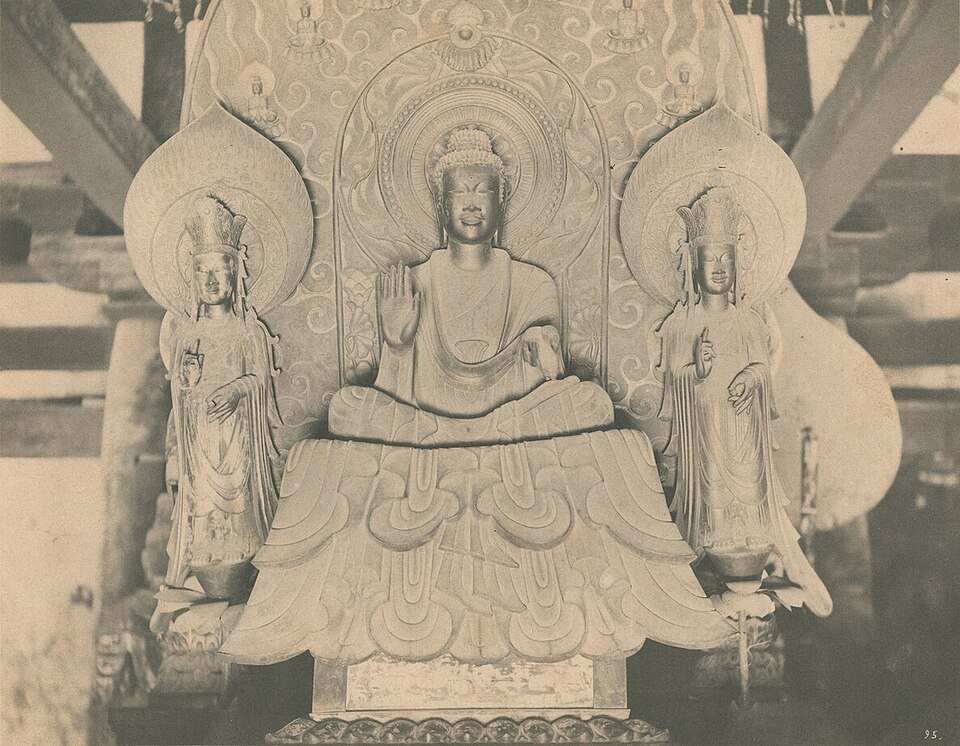
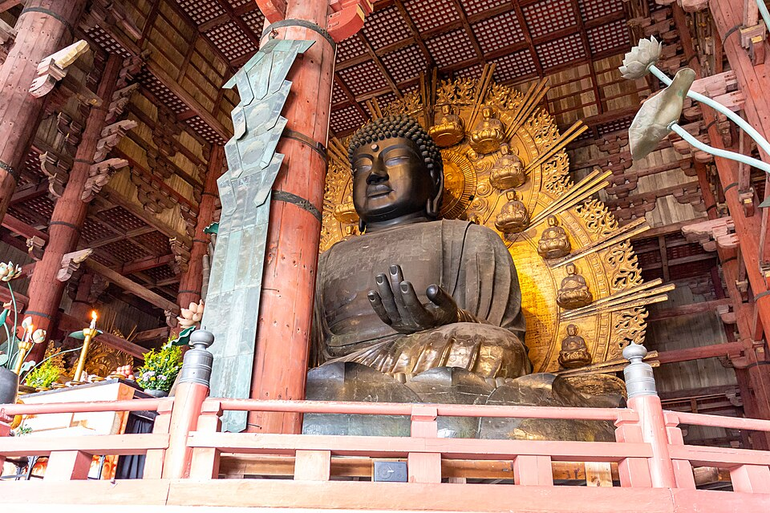

‹ 単元一覧にもどる
歴史 ④問題集
古代の国家
飛鳥時代 〜 平安時代
 いっしょに
いっしょにがんばろう！
💡タブか下のリストから単元を選ぼう！
やり方（おすすめ順・穴埋め・一問一答・4択・記述）は単元を開いてから選べるよ。
📖 参考書を開く
やり方（おすすめ順・穴埋め・一問一答・4択・記述）は単元を開いてから選べるよ。
画像出典: File:Byōdō-in, Phoenix Hall.jpg（Marco Almbauer / CC0 / Wikimedia Commons） File:20190121 Tōdai-ji Great Buddha-1.jpg（Balon Greyjoy / CC0 / Wikimedia Commons） File:Horyu-ji Kondo and Five-story Pagoda 2022.jpg（ONO Masanobu / CC0 / Wikimedia Commons） File:Horyuji Shaka Triad.jpg（Ogawa Kazumasa / Public domain / Wikimedia Commons） File:Japan- Nara, Todaiji Shosoin 2011.jpg（Z Tanuki. / CC BY 3.0 / Wikimedia Commons）
年
年表でチェック
（ ）をタップすると答えが出るよ。まずは自分で言ってから確かめよう！
| 年代 | できごと |
|---|---|
| 593年 | が推古天皇の摂政となる |
| 603年 | 才能ある人物を役人に取り立てるが定められる |
| 604年 | 役人の心構えを示したが定められる |
| 607年 | 小野妹子がとして隋に派遣される |
| 645年 | 中大兄皇子と中臣鎌足がを始める |
| 663年 | で唐・新羅の連合軍に敗れる |
| 672年 | 皇位をめぐるが起こる |
| 701年 | 唐の制度にならったが完成する |
| 710年 | 都が奈良のに移される |
| 743年 | 開墾地の永久私有を認めるが出される |
| 752年 | 聖武天皇の命でつくられた東大寺のが完成する |
| 794年 | 桓武天皇が都をに移す |
| 894年 | 菅原道真の意見でが停止される |
| 1016年 | が摂政となる（摂関政治の全盛期） |
| 1053年 | 藤原頼通が宇治にを建てる |
1
聖徳太子と飛鳥文化
▶やり方をえらぼう目次にもどれば何度でも変えられるよ
解答
採点
順番
順番
A要点まとめ（ ）をタップして確かめよう
📖 先に参考書で理解する
6世紀末、推古天皇の摂政となったは、天皇中心の政治を目指した。603年、家柄にとらわれず才能ある人物を役人に取り立てるを定め、604年には役人の心構えを示したを制定した。607年にはをとして隋に派遣し、対等な国交を目指した。このころ、日本で最初の仏教文化であるが栄え、聖徳太子が建てたと伝えられる現存する世界最古の木造建築がその代表である。
B一問一答1 / 14
推古天皇の摂政として政治改革を行った人物は？
📖 解説を読む（ヒント）
聖徳太子
推古天皇のもとで政治を行い、天皇中心の政治をめざした人物。冠位十二階・十七条の憲法・遣隋使と結びつける。
B一問一答2 / 14
日本初の女性天皇で、聖徳太子が摂政を務めたのは？
📖 解説を読む（ヒント）
推古天皇
日本で最初の女性天皇とされ、593年に聖徳太子を摂政として補佐させた。飛鳥時代の政治改革と関係。
B一問一答3 / 14
仏教を受け入れ、飛鳥時代に大きな力をもった豪族は？
📖 解説を読む（ヒント）
蘇我氏
6世紀末から仏教を受け入れ、飛鳥時代に大きな力をもった豪族。物部氏との対立に勝利し、蘇我馬子の時代に栄えた。
B一問一答4 / 14
家柄ではなく才能や功績で地位を決める制度は？
📖 解説を読む（ヒント）
冠位十二階
聖徳太子が603年に定めた、家柄に関係なく才能や功績のある人を役人に取り立てる制度。冠の色で位を示した。
B一問一答5 / 14
役人の心構えを示した、聖徳太子が定めた法は？
📖 解説を読む（ヒント）
十七条の憲法
「和を以て貴しとなす」で始まる役人の心構え。天皇への忠誠と仏教の敬いを説いた。現代の憲法とは性格が違う。
B一問一答7 / 14
607年に遣隋使として派遣された人物は？
📖 解説を読む（ヒント）
小野妹子
聖徳太子の命で607年に遣隋使として派遣された人物。隋の煬帝に「日出づる処の天子」の手紙を携えていった。
B一問一答10 / 14
聖徳太子と協力して仏教を広めた有力豪族は？
📖 解説を読む（ヒント）
蘇我馬子
6世紀末から7世紀初頭に聖徳太子と協力して仏教を推進し、日本初の本格的寺院・飛鳥寺を建立した有力豪族。
B一問一答12 / 14
十七条の憲法の第2条「篤く〇〇を敬え」の〇〇に入る言葉は？
📖 解説を読む（ヒント）
三宝（仏・法・僧）
仏・法（教え）・僧の三つをまとめて指す言葉。聖徳太子の十七条の憲法第2条で、敬うべき大切なものとされた。
B一問一答13 / 14
法隆寺金堂に安置されている、飛鳥文化を代表する仏像は？
📖 解説を読む（ヒント）
釈迦三尊像
聖徳太子ゆかりの法隆寺金堂にある、飛鳥文化を代表する仏像。中央の釈迦如来の左右に脇侍を従えた三尊形式。
B一問一答全14問・まとめて採点
まず全部の問題にこたえてから、下のボタンでまとめて答え合わせしよう！
(1)推古天皇の摂政として政治改革を行った人物は？
聖徳太子
推古天皇のもとで政治を行い、天皇中心の政治をめざした人物。冠位十二階・十七条の憲法・遣隋使と結びつける。
(2)日本初の女性天皇で、聖徳太子が摂政を務めたのは？
推古天皇
日本で最初の女性天皇とされ、593年に聖徳太子を摂政として補佐させた。飛鳥時代の政治改革と関係。
(3)仏教を受け入れ、飛鳥時代に大きな力をもった豪族は？
蘇我氏
6世紀末から仏教を受け入れ、飛鳥時代に大きな力をもった豪族。物部氏との対立に勝利し、蘇我馬子の時代に栄えた。
(4)家柄ではなく才能や功績で地位を決める制度は？
冠位十二階
聖徳太子が603年に定めた、家柄に関係なく才能や功績のある人を役人に取り立てる制度。冠の色で位を示した。
(5)役人の心構えを示した、聖徳太子が定めた法は？
十七条の憲法
「和を以て貴しとなす」で始まる役人の心構え。天皇への忠誠と仏教の敬いを説いた。現代の憲法とは性格が違う。
(6)中国の隋へ送られた使節の名称は？
遣隋使
聖徳太子が隋に派遣した使節で、607年に小野妹子が派遣された。隋の制度や文化を学び、対等外交を目指した。
(7)607年に遣隋使として派遣された人物は？
小野妹子
聖徳太子の命で607年に遣隋使として派遣された人物。隋の煬帝に「日出づる処の天子」の手紙を携えていった。
(8)聖徳太子が建立した世界最古の木造建築は？
法隆寺
聖徳太子ゆかりの寺。現存する世界最古の木造建築として知られる。飛鳥文化を代表する寺院。
(9)法隆寺に代表される日本初の仏教文化は？
飛鳥文化
飛鳥時代に栄えた、日本で最初の仏教文化。法隆寺・釈迦三尊像など。中国・朝鮮半島の影響を強く受けた。
(10)聖徳太子と協力して仏教を広めた有力豪族は？
蘇我馬子
6世紀末から7世紀初頭に聖徳太子と協力して仏教を推進し、日本初の本格的寺院・飛鳥寺を建立した有力豪族。
(11)聖徳太子が生きていた当時の名前は何？
厩戸皇子
推古天皇の摂政となった聖徳太子の本来の名前。「聖徳太子」は徳をたたえて後世に贈られた呼び名。
(12)十七条の憲法の第2条「篤く〇〇を敬え」の〇〇に入る言葉は？
三宝（仏・法・僧）
仏・法（教え）・僧の三つをまとめて指す言葉。聖徳太子の十七条の憲法第2条で、敬うべき大切なものとされた。
(13)法隆寺金堂に安置されている、飛鳥文化を代表する仏像は？
釈迦三尊像
聖徳太子ゆかりの法隆寺金堂にある、飛鳥文化を代表する仏像。中央の釈迦如来の左右に脇侍を従えた三尊形式。
(14)聖徳太子が政治を行った地域を何という？
飛鳥
現在の奈良県明日香村周辺。6〜7世紀に聖徳太子や蘇我氏が政治の中心とした地域で、飛鳥文化が栄えた。
E資料問題写真を見て答えよう

(1)写真は、聖徳太子が建てたと伝えられる、現存する世界最古の木造建築である。この寺院を何というか。
(2)この寺院に代表される、日本で最初の仏教文化を何というか。
E資料問題写真を見て答えよう

(3)写真は法隆寺金堂の本尊である仏像で、飛鳥文化を代表する作品である。この仏像を何というか。

2
大化の改新
▶やり方をえらぼう目次にもどれば何度でも変えられるよ
解答
採点
順番
順番
A要点まとめ（ ）をタップして確かめよう
📖 先に参考書で理解する
645年、はとともに蘇我蝦夷・入鹿をたおし、と呼ばれる政治改革を始めた。土地と人民を国家が直接支配するの方針が示された。663年、百済の復興を助けるため出兵した日本はで唐・新羅の連合軍に敗れた。中大兄皇子はのちに即位してとなった。その死後の672年には皇位をめぐるが起こり、勝利した大海人皇子がとして即位した。
B一問一答1 / 14
645年に始まった天皇中心の政治改革を何という？
📖 解説を読む（ヒント）
大化の改新
645年に中大兄皇子と中臣鎌足らが蘇我氏を倒して始めた政治改革。公地公民や中央集権体制をめざした。
B一問一答2 / 14
大化の改新を主導し、後に天智天皇となったのは誰？
📖 解説を読む（ヒント）
中大兄皇子
645年に中臣鎌足とともに蘇我入鹿を倒し大化の改新を主導。のちに天智天皇として即位した皇族。
B一問一答3 / 14
改新に協力し、藤原姓を賜り藤原氏の祖となったのは？
📖 解説を読む（ヒント）
中臣鎌足
645年に中大兄皇子と組み大化の改新に協力した人物。のちに天智天皇から藤原姓を賜り藤原氏の祖となった。
B一問一答4 / 14
土地と人民を国家が支配する方針は？
📖 解説を読む（ヒント）
公地・公民
国内の土地と人々を国のものとして治める方針。豪族が自分のものにすることをやめさせ、天皇のもとに権力を集めた。
B一問一答5 / 14
663年に唐・新羅の連合軍に敗れた戦いは？
📖 解説を読む（ヒント）
白村江の戦い
日本が百済を助けるため朝鮮半島に出兵し、唐・新羅の連合軍に敗れた戦い。敗戦後、防衛体制を強めた。
B一問一答8 / 14
694年に造営された日本初の本格的な都城は？
📖 解説を読む（ヒント）
藤原京
694年に持統天皇のもとで造営された、唐の長安をモデルにした日本初の本格的な都城。710年に平城京へ遷都した。
B一問一答9 / 14
天武天皇の皇后で、藤原京を造営した天皇は？
📖 解説を読む（ヒント）
持統天皇
天武天皇の皇后で、即位して天武天皇の政策を引き継ぎ、694年に日本初の本格的な都城・藤原京を造営した。
B一問一答10 / 14
白村江の戦いの後に九州の防衛のため築かれた堤防は？
📖 解説を読む（ヒント）
水城
663年の白村江の戦いの敗北後、唐・新羅の侵攻に備えて九州の大宰府を守るために築かれた土塁。
B一問一答12 / 14
大化の改新で倒された蘇我氏の人物は？
📖 解説を読む（ヒント）
蘇我入鹿
645年の大化の改新（乙巳の変）で中大兄皇子と中臣鎌足に倒された、朝廷で権勢を振るった蘇我氏の人物。
B一問一答全14問・まとめて採点
まず全部の問題にこたえてから、下のボタンでまとめて答え合わせしよう！
(1)645年に始まった天皇中心の政治改革を何という？
大化の改新
645年に中大兄皇子と中臣鎌足らが蘇我氏を倒して始めた政治改革。公地公民や中央集権体制をめざした。
(2)大化の改新を主導し、後に天智天皇となったのは誰？
中大兄皇子
645年に中臣鎌足とともに蘇我入鹿を倒し大化の改新を主導。のちに天智天皇として即位した皇族。
(3)改新に協力し、藤原姓を賜り藤原氏の祖となったのは？
中臣鎌足
645年に中大兄皇子と組み大化の改新に協力した人物。のちに天智天皇から藤原姓を賜り藤原氏の祖となった。
(4)土地と人民を国家が支配する方針は？
公地・公民
国内の土地と人々を国のものとして治める方針。豪族が自分のものにすることをやめさせ、天皇のもとに権力を集めた。
(5)663年に唐・新羅の連合軍に敗れた戦いは？
白村江の戦い
日本が百済を助けるため朝鮮半島に出兵し、唐・新羅の連合軍に敗れた戦い。敗戦後、防衛体制を強めた。
(6)672年に起きた皇位継承をめぐる内乱は？
壬申の乱
天智天皇の死後に起きた皇位継承をめぐる争い。勝利した大海人皇子が天武天皇となった。
(7)壬申の乱に勝利し即位した天皇は？
天武天皇
672年の壬申の乱に勝って即位し、天皇中心の国家づくりを進めた天皇。律令国家の基礎を整えた。
(8)694年に造営された日本初の本格的な都城は？
藤原京
694年に持統天皇のもとで造営された、唐の長安をモデルにした日本初の本格的な都城。710年に平城京へ遷都した。
(9)天武天皇の皇后で、藤原京を造営した天皇は？
持統天皇
天武天皇の皇后で、即位して天武天皇の政策を引き継ぎ、694年に日本初の本格的な都城・藤原京を造営した。
(10)白村江の戦いの後に九州の防衛のため築かれた堤防は？
水城
663年の白村江の戦いの敗北後、唐・新羅の侵攻に備えて九州の大宰府を守るために築かれた土塁。
(11)奈良時代に九州に置かれ、外交や防衛を担当した役所は？
大宰府
九州に置かれ、外交や防衛を担当した役所。白村江の戦い後の防衛拠点として重要になった。
(12)大化の改新で倒された蘇我氏の人物は？
蘇我入鹿
645年の大化の改新（乙巳の変）で中大兄皇子と中臣鎌足に倒された、朝廷で権勢を振るった蘇我氏の人物。
(13)壬申の乱に勝利した天智天皇の弟は？
大海人皇子
天智天皇の弟で、672年の壬申の乱に勝利して天武天皇として即位した。律令国家の基礎を整えた。
(14)壬申の乱で大海人皇子に敗れた天智天皇の子は？
大友皇子
天智天皇の子で、672年に起きた皇位継承争いの壬申の乱で叔父の大海人皇子に敗れた人物。
3
律令国家と奈良時代
▶やり方をえらぼう目次にもどれば何度でも変えられるよ
解答
採点
順番
順番
A要点まとめ（ ）をタップして確かめよう
📖 先に参考書で理解する
701年、唐の制度にならったが完成した。律はについての決まり、令はのしくみについての決まりである。中央には、政治を担当すると祭りを担当する神祇官の二官が置かれ、地方には都からが派遣された。九州には外交・防衛を担うが置かれた。710年、唐の都長安にならったが奈良につくられ、などの貨幣も発行された。
B一問一答2 / 14
刑罰について定めた「律」と、政治のしくみについて定めた「令」を合わせた法律は？
📖 解説を読む（ヒント）
律令
律は刑罰、令は政治のしくみを定めた法律で、唐の制度を参考にした。701年の大宝律令で本格的に整備された。
B一問一答7 / 14
太政官・神祇官の二官と八省からなる律令制の中央組織は？
📖 解説を読む（ヒント）
二官八省
律令国家の中央政治のしくみ。政治の太政官・祭祀の神祇官の二官と、その下の八省からなる体制。
B一問一答9 / 14
律令制度のもとで、地方の有力豪族が任命された地方役人は？
📖 解説を読む（ヒント）
郡司
律令国家で地方の郡を治めた役人。多くは地方の有力豪族が任命され、中央から派遣された国司のもとで働いた。
B一問一答12 / 14
708年に初めて鋳造された流通貨幣を何という？
📖 解説を読む（ヒント）
和同開珎
708年に元明天皇の時代に鋳造された日本最古の流通貨幣。唐の貨幣をモデルにした奈良時代の銅銭。
B一問一答13 / 14
古代に九州の外交や防衛を担った役所は？
📖 解説を読む（ヒント）
大宰府
古代に九州に置かれ、外交や防衛を担当した役所。663年の白村江の戦い後に防衛拠点として重要となった。
B一問一答14 / 14
平城京の中央を南北に通る大道路は？
📖 解説を読む（ヒント）
朱雀大路
平城京の中央を南北に通る大通り。都を東の左京と西の右京に分け、唐の長安をモデルにした碁盤の目状の都市計画の中心。
B一問一答全14問・まとめて採点
まず全部の問題にこたえてから、下のボタンでまとめて答え合わせしよう！
(1)701年に完成した律令を何という？
大宝律令
701年に完成した法典。律（刑罰）と令（政治）で国を治める仕組みが整った。唐の制度を参考にした。
(2)刑罰について定めた「律」と、政治のしくみについて定めた「令」を合わせた法律は？
律令
律は刑罰、令は政治のしくみを定めた法律で、唐の制度を参考にした。701年の大宝律令で本格的に整備された。
(3)710年に奈良に置かれた都は？
平城京
710年に元明天皇のもとで遷都。唐の長安をモデルに碁盤の目状に整備された。奈良時代の中心。
(4)平城京に都が置かれた約80年間を何時代という？
奈良時代
平城京を中心に、律令にもとづく政治が行われた時代。班田収授法・租庸調・天平文化が重要。
(5)律令国家で行政を行う最高機関は？
太政官
律令国家で国の政治を広く担当した役所。神祇官と並ぶ最も上の2つの役所のうちの1つで、下に八省が置かれた。
(6)神事や祭祀を司り、太政官と並ぶ機関は？
神祇官
律令国家で神々の祭りを担当した役所。政治を担当する太政官と並ぶ最も上の2つの役所のうちの1つ。
(7)太政官・神祇官の二官と八省からなる律令制の中央組織は？
二官八省
律令国家の中央政治のしくみ。政治の太政官・祭祀の神祇官の二官と、その下の八省からなる体制。
(8)都から地方の国に派遣された役職は？
国司
律令国家で中央から地方の国に派遣された役人。地方政治を監督し、地元豪族から任命された郡司を統括した。
(9)律令制度のもとで、地方の有力豪族が任命された地方役人は？
郡司
律令国家で地方の郡を治めた役人。多くは地方の有力豪族が任命され、中央から派遣された国司のもとで働いた。
(10)律令のうち、刑罰に関する決まりは？
律
律令のうち刑罰に関する決まり。犯罪と罰則を定めたもので、政治のしくみを定めた令とセットで律令となる。
(11)律令のうち、政治に関する決まりは？
令
律令のうち政治に関する決まり。行政の仕組みや官職を定めたもので、刑罰の律とセットで律令となる。
(12)708年に初めて鋳造された流通貨幣を何という？
和同開珎
708年に元明天皇の時代に鋳造された日本最古の流通貨幣。唐の貨幣をモデルにした奈良時代の銅銭。
(13)古代に九州の外交や防衛を担った役所は？
大宰府
古代に九州に置かれ、外交や防衛を担当した役所。663年の白村江の戦い後に防衛拠点として重要となった。
(14)平城京の中央を南北に通る大道路は？
朱雀大路
平城京の中央を南北に通る大通り。都を東の左京と西の右京に分け、唐の長安をモデルにした碁盤の目状の都市計画の中心。
E資料問題写真を見て答えよう

(1)図中の①の太政官の下に置かれ、実際の政務を分担した8つの役所をまとめて何というか。
(2)この図のように、律令にもとづいて政治を行うしくみを整えた国家を何というか。
4
班田収授法と税制度
▶やり方をえらぼう目次にもどれば何度でも変えられるよ
解答
採点
順番
順番
A要点まとめ（ ）をタップして確かめよう
📖 先に参考書で理解する
律令国家は、に登録された6歳以上のすべての人々にを与え、死ねば国に返させるを実施した。人々には、収穫量の約3%の稲を納める、布や各地の特産物を納める、都での労役の代わりに布を納めるなどの税が課され、九州北部の守りにつくなどの兵役の負担もあった。人口の増加で口分田が不足すると、743年にが出されて開墾地の永久私有が認められ、貴族や寺社の私有地であるが生まれるきっかけとなった。
B一問一答1 / 14
人々に土地を与え、死後返還させる制度を何という？
📖 解説を読む（ヒント）
班田収授法
6歳以上の男女に口分田を与え、死ぬと国に返させた制度。701年の大宝律令で整い、公地公民の原則と結びつく。
B一問一答6 / 14
白村江の戦いの後、九州北部の防衛にあたった兵士は？
📖 解説を読む（ヒント）
防人
白村江の戦い後に九州北部の守りについた兵士。東国の農民から選ばれ、約3年間家族と離れて任務にあたった。
B一問一答7 / 14
723年に出され、開墾した土地の私有を一定期間認めた法は？
📖 解説を読む（ヒント）
三世一身法
723年に出され、開墾した土地を3代まで私有できるとした法。口分田の不足を補い開墾を奨励する目的だった。
B一問一答8 / 14
743年に土地の永久私有を認めた法を何という？
📖 解説を読む（ヒント）
墾田永年私財法
743年に聖武天皇のもとで出され、新しく開墾した土地の永久私有を認めた法。荘園が発生するきっかけ。
B一問一答全14問・まとめて採点
まず全部の問題にこたえてから、下のボタンでまとめて答え合わせしよう！
(1)人々に土地を与え、死後返還させる制度を何という？
班田収授法
6歳以上の男女に口分田を与え、死ぬと国に返させた制度。701年の大宝律令で整い、公地公民の原則と結びつく。
(2)班田収授法で人々に与えられた田は？
口分田
班田収授法によって6歳以上の男女に与えられた田。収穫の約3%を租として米で納めるもとになった。
(3)収穫量の約3%を稲で納める税は？
租
口分田の収穫から納める税で、米（稲）で納めた。収穫量の約3%が目安で、農民全員に課された。
(4)布や各地の特産物を都へ納める税は？
調
布や地方の特産物を都に納める税。成人男性に重く課され、運搬費も農民の自己負担で大きな負担になった。
(5)都での労役の代わりに布を納める税は？
庸
都での労役（年10日）の代わりに布などを納める税。成人男性が負担し、租・調とセットで覚える。
(6)白村江の戦いの後、九州北部の防衛にあたった兵士は？
防人
白村江の戦い後に九州北部の守りについた兵士。東国の農民から選ばれ、約3年間家族と離れて任務にあたった。
(7)723年に出され、開墾した土地の私有を一定期間認めた法は？
三世一身法
723年に出され、開墾した土地を3代まで私有できるとした法。口分田の不足を補い開墾を奨励する目的だった。
(8)743年に土地の永久私有を認めた法を何という？
墾田永年私財法
743年に聖武天皇のもとで出され、新しく開墾した土地の永久私有を認めた法。荘園が発生するきっかけ。
(9)古代後半の貴族や大寺院が持つ私有地の名称は？
荘園
貴族や寺社が開墾や寄進で広げた私有地。墾田永年私財法の制定後に拡大し、公地公民の崩壊を招いた。
(10)6歳以上の人々を登録した台帳は？
戸籍
6年ごとに作成された6歳以上の人民の台帳。班田収授の際に口分田を配分する基礎資料となった。
(11)税を納めた際に品物に付けた木札は？
木簡
調や庸の品物に付けられた木札で、品名・産地・納入者などが記された。当時の税制を知る重要な史料。
(12)地方で年間60日を限度とした労役は？
雑徭
国司のもとで地方で年間60日を限度に課された労役。農繁期にも動員されることがあり大きな負担となった。
(13)官庁や個人に所属して売買もされた身分は？
奴婢
律令制で最下層に位置づけられた賤民の身分。官庁や個人に所属し、奴隷のように売買もされた。
(14)墾田永年私財法を出した天皇は？
聖武天皇
奈良時代に国分寺の建立や東大寺の大仏造立を行い、743年に墾田永年私財法を出した天皇。
E資料問題写真を見て答えよう

(1)図のように、戸籍に登録された6歳以上の人々に口分田を与え、死ぬと国に返させた土地の制度を何というか。
(2)図中の②の、口分田を与えられた人々が国に納めた、稲による税を何というか。
5
天平文化
▶やり方をえらぼう目次にもどれば何度でも変えられるよ
解答
採点
順番
順番
A要点まとめ（ ）をタップして確かめよう
📖 先に参考書で理解する
奈良時代、は仏教の力で国を守ろうと、国ごとにと国分尼寺を建て、都にはを建てて大仏をつくらせた。このころ栄えた、唐やを通じて伝わった国際色豊かな仏教文化をという。聖武天皇の遺品などは東大寺のに納められた。また、神話や記録をまとめた歴史書の「古事記」「日本書紀」や、日本最古の和歌集「」がまとめられた。唐の高僧は、何度も渡航に失敗しながら来日し、唐招提寺を建てた。
B一問一答1 / 14
聖武天皇の時代を中心に栄えたのは何文化？
📖 解説を読む（ヒント）
天平文化
8世紀の奈良時代、聖武天皇のもとで栄えた唐の影響を強く受けた仏教文化。東大寺・正倉院・万葉集などが代表。
B一問一答3 / 14
仏教で国を守るために各国に建てたお寺を何という？
📖 解説を読む（ヒント）
国分寺
奈良時代に聖武天皇が仏教の力で国を守るため、国ごとに建てさせた寺。国分尼寺とともに各国に置かれた。
B一問一答8 / 14
正倉院で見られる三角形の木材を組む造りは何造り？
📖 解説を読む（ヒント）
校倉造
三角形の木材を組み上げる建築様式で、東大寺の正倉院に用いられた。湿度の調節に優れ、宝物の保存に適した。
B一問一答10 / 14
神話や伝承を基に編纂された日本最古の歴史書は？
📖 解説を読む（ヒント）
古事記
日本最古の歴史書で、712年に元明天皇の命で完成。稗田阿礼が口述し太安万侶が記した神話や天皇の系譜。
B一問一答11 / 14
720年に完成した国の正史として編纂された歴史書は？
📖 解説を読む（ヒント）
日本書紀
720年に完成した、国家が編さんした正史としての歴史書。漢文で書かれ、古事記と並ぶ奈良時代の重要書。
B一問一答13 / 14
各地の自然や伝承を記録した報告書は？
📖 解説を読む（ヒント）
風土記
713年に元明天皇の命で各国が編集した、各地の自然・産物・伝承を記録した報告書。地方の様子を知る貴重な史料。
B一問一答14 / 14
興福寺にある、3つの顔と6本の腕を持つ有名な仏像は？
📖 解説を読む（ヒント）
阿修羅像
奈良の興福寺にある3つの顔と6本の腕を持つ仏像。8世紀奈良時代の天平文化の写実的表現を代表する。
B一問一答全14問・まとめて採点
まず全部の問題にこたえてから、下のボタンでまとめて答え合わせしよう！
(1)聖武天皇の時代を中心に栄えたのは何文化？
天平文化
8世紀の奈良時代、聖武天皇のもとで栄えた唐の影響を強く受けた仏教文化。東大寺・正倉院・万葉集などが代表。
(2)国分寺や東大寺を造らせ仏教で国を守ろうとした天皇は？
聖武天皇
仏教の力で国を守ろうとし、国分寺や東大寺を造らせた天皇。奈良時代の仏教政治と関係。
(3)仏教で国を守るために各国に建てたお寺を何という？
国分寺
奈良時代に聖武天皇が仏教の力で国を守るため、国ごとに建てさせた寺。国分尼寺とともに各国に置かれた。
(4)聖武天皇が都に建立した巨大な寺は？
東大寺
奈良時代に聖武天皇が建立した大寺院で、本尊として鋳造された巨大な大仏（盧舎那仏）が有名。
(5)日本に正式な戒律を伝えた唐の僧は？
鑑真
唐から日本に来て、正しい仏教の教えを伝えた僧。唐招提寺を開いた。失明しながらも来日。
(6)鑑真が建立した、奈良にあるお寺は？
唐招提寺
唐から来日した鑑真が奈良に開いた寺で、僧侶になるための正式な戒律を伝える修行道場となった。
(7)聖武天皇の愛用品が納められた建物は？
正倉院
東大寺にある倉で、聖武天皇ゆかりの宝物などを納めた。シルクロードを通じた国際色が見られる。
(8)正倉院で見られる三角形の木材を組む造りは何造り？
校倉造
三角形の木材を組み上げる建築様式で、東大寺の正倉院に用いられた。湿度の調節に優れ、宝物の保存に適した。
(9)民間で布教し、橋や池を造った僧は？
行基
民間で布教活動を行い、橋や池を造って人々を助けた僧。大仏造立にも民衆を率いて協力。
(10)神話や伝承を基に編纂された日本最古の歴史書は？
古事記
日本最古の歴史書で、712年に元明天皇の命で完成。稗田阿礼が口述し太安万侶が記した神話や天皇の系譜。
(11)720年に完成した国の正史として編纂された歴史書は？
日本書紀
720年に完成した、国家が編さんした正史としての歴史書。漢文で書かれ、古事記と並ぶ奈良時代の重要書。
(12)8世紀後半にまとめられた日本最古の歌集は？
万葉集
奈良時代にまとめられた和歌集。天皇から農民・防人まで幅広い歌を収める。約4500首。
(13)各地の自然や伝承を記録した報告書は？
風土記
713年に元明天皇の命で各国が編集した、各地の自然・産物・伝承を記録した報告書。地方の様子を知る貴重な史料。
(14)興福寺にある、3つの顔と6本の腕を持つ有名な仏像は？
阿修羅像
奈良の興福寺にある3つの顔と6本の腕を持つ仏像。8世紀奈良時代の天平文化の写実的表現を代表する。
E資料問題写真を見て答えよう

(1)写真の大仏が置かれている、奈良時代に都に建てられた寺院を何というか。
(2)この大仏をつくる命令を出した天皇はだれか。
E資料問題写真を見て答えよう

(3)写真は、聖武天皇の遺品などが納められた東大寺の宝物庫である。この建物を何というか。
(4)この建物に用いられている、三角形の木材を組み上げた建築様式を何というか。
6
平安京と新しい仏教
▶やり方をえらぼう目次にもどれば何度でも変えられるよ
解答
採点
順番
順番
A要点まとめ（ ）をタップして確かめよう
📖 先に参考書で理解する
794年、は律令政治を立て直すため、都をに移した。東北地方の蝦夷を平定するため、がに任命された。9世紀初め、唐に渡って仏教を学んだは帰国後を開いて比叡山に延暦寺を建て、はを開いて高野山に金剛峯寺を建てた。
B一問一答1 / 14
794年に遷都された京都の都を何という？
📖 解説を読む（ヒント）
平安京
794年に桓武天皇が移した都。約400年間日本の首都となった。「鳴くよウグイス平安京」で覚えられる。
B一問一答5 / 14
東北の蝦夷を征討した役職を何という？
📖 解説を読む（ヒント）
征夷大将軍
もとは東北地方の蝦夷を討つために任命された将軍。坂上田村麻呂が任命された。後の武家政権の将軍と区別する。
B一問一答14 / 14
山奥で修行を行う新しい仏教の形態は？
📖 解説を読む（ヒント）
山岳仏教
最澄・空海が9世紀初めに開いた新しい仏教の形態。山奥での修行と学問を重視し、奈良の都市仏教と異なる。
B一問一答全14問・まとめて採点
まず全部の問題にこたえてから、下のボタンでまとめて答え合わせしよう！
(1)794年に遷都された京都の都を何という？
平安京
794年に桓武天皇が移した都。約400年間日本の首都となった。「鳴くよウグイス平安京」で覚えられる。
(2)平安京へ都を移した天皇は？
桓武天皇
794年に平安京へ都を移し、奈良の仏教勢力をおさえ政治の立て直しを進めた天皇。平安時代の始まりと結びつく。
(3)平安京に都が置かれた約400年間を何時代という？
平安時代
794年の平安京遷都から鎌倉幕府成立までの時代。貴族政治・国風文化・武士の成長が重要。
(4)征夷大将軍として東北を平定した人物は？
坂上田村麻呂
桓武天皇に征夷大将軍に任命され、東北に派遣されて蝦夷の指導者アテルイを降伏させた人物。
(5)東北の蝦夷を征討した役職を何という？
征夷大将軍
もとは東北地方の蝦夷を討つために任命された将軍。坂上田村麻呂が任命された。後の武家政権の将軍と区別する。
(6)東北地方に住み朝廷の支配に従わなかった人々は？
蝦夷
古代に東北地方などに住み、朝廷に従わなかった人々を指した呼び名。朝廷の東北支配と関係。
(7)朝廷に激しく抵抗した蝦夷の指導者は？
アテルイ
東北地方の蝦夷の指導者。朝廷に激しく抵抗したが、桓武天皇の時代に坂上田村麻呂に降伏させられた。
(8)唐から帰国し、天台宗を開いた僧は？
最澄
9世紀初めに唐で学び、帰国後に滋賀県の比叡山延暦寺に天台宗を開いた僧。天台宗・延暦寺と結びつける。
(9)真言宗を始め、高野山に寺を建てた僧は？
空海
9世紀初めに唐で密教を学び、和歌山県の高野山金剛峯寺に真言宗を開いた僧。死後に弘法大師と呼ばれる。
(10)最澄が比叡山で開いた宗派は？
天台宗
最澄が9世紀初めに広めた仏教の宗派で、滋賀県の比叡山延暦寺を総本山とする。山岳仏教の代表。
(11)空海が高野山で開いた宗派は？
真言宗
空海が9世紀初めに広めた仏教の宗派で、和歌山県の高野山金剛峯寺を総本山とする密教の宗派。
(12)最澄が比叡山に建てた天台宗の総本山は？
延暦寺
最澄が開いた、滋賀県の比叡山にある天台宗の総本山。のちに法然・親鸞など鎌倉新仏教の名僧を輩出した。
(13)空海が高野山に建てた真言宗の総本山は？
金剛峯寺
空海が9世紀初めに和歌山県の高野山に建てた真言宗の総本山で、密教の修行道場となった。
(14)山奥で修行を行う新しい仏教の形態は？
山岳仏教
最澄・空海が9世紀初めに開いた新しい仏教の形態。山奥での修行と学問を重視し、奈良の都市仏教と異なる。
7
摂関政治
▶やり方をえらぼう目次にもどれば何度でも変えられるよ
解答
採点
順番
順番
A要点まとめ（ ）をタップして確かめよう
📖 先に参考書で理解する
藤原氏は、娘を天皇のきさきにし、生まれた子を天皇に立てて、天皇が幼いときは、成人したのちはという職について政治の実権を握った。このような政治をという。摂関政治は11世紀前半のとその子のときに最も栄えた。道長がよんだ「この世をば わが世とぞ思ふ の 欠けたることも なしと思へば」の歌は、その栄華をよく表している。頼通は宇治に阿弥陀堂であるを建てた。
B一問一答1 / 14
藤原氏が娘を天皇のきさきにして実権を握った政治を何という？
📖 解説を読む（ヒント）
摂関政治
藤原氏が娘を天皇の后にし、摂政や関白として行った政治。11世紀の藤原道長・頼通の時代に全盛期を迎えた。
B一問一答6 / 14
天皇の母方の親戚のことを何という？
📖 解説を読む（ヒント）
外戚
天皇の母方の親戚のこと。藤原氏は娘を天皇のきさきにし、生まれた孫を天皇にして摂政・関白の地位から政治を動かした。
B一問一答7 / 14
藤原道長は歌の中で自分の栄華を何にたとえた？
📖 解説を読む（ヒント）
望月（満月）
藤原道長が「この世をば」の歌で欠けることのない満月に自分の栄華をたとえた。摂関政治の全盛を象徴する歌。
B一問一答10 / 14
浄土信仰で信仰の対象とされた仏は？
📖 解説を読む（ヒント）
阿弥陀如来
平安時代後期の浄土信仰で信仰の対象とされた仏。極楽浄土に導いてくれると信じられ、平等院鳳凰堂に安置された。
B一問一答13 / 14
上皇が中心となって政治を行うしくみは？
📖 解説を読む（ヒント）
院政
退位した天皇（上皇）が自分の住まいで政治を行うしくみ。11世紀末の白河上皇から本格化し、摂関政治に代わった。
B一問一答全14問・まとめて採点
まず全部の問題にこたえてから、下のボタンでまとめて答え合わせしよう！
(1)藤原氏が娘を天皇のきさきにして実権を握った政治を何という？
摂関政治
藤原氏が娘を天皇の后にし、摂政や関白として行った政治。11世紀の藤原道長・頼通の時代に全盛期を迎えた。
(2)幼い天皇に代わって政治を行う役職は？
摂政
天皇が幼いときなどに代わって政治を行う役職。藤原氏が外戚として就き、摂関政治の中心となった。
(3)成長した天皇を補佐する役職を何という？
関白
成人した天皇を補佐して政治を行う役職。藤原氏が外戚として就き、摂政と並んで摂関政治の中心となった。
(4)摂関政治の全盛期を築いた人物は？
藤原道長
摂関政治の全盛期を築いた藤原氏の人物。娘を天皇の后にし、外戚として力を持った。望月の歌で有名。
(5)道長の子で、平等院鳳凰堂を建立した人物は？
藤原頼通
藤原道長の子で、1053年に宇治に平等院鳳凰堂を建てた人物。父の時代に続き摂関政治を主導した。
(6)天皇の母方の親戚のことを何という？
外戚
天皇の母方の親戚のこと。藤原氏は娘を天皇のきさきにし、生まれた孫を天皇にして摂政・関白の地位から政治を動かした。
(7)藤原道長は歌の中で自分の栄華を何にたとえた？
望月（満月）
藤原道長が「この世をば」の歌で欠けることのない満月に自分の栄華をたとえた。摂関政治の全盛を象徴する歌。
(8)平安時代の貴族の住まいに見られる建築様式は？
寝殿造
平安時代の貴族の住宅様式。中央に寝殿を置き渡り廊下で対屋を結ぶ。庭に池を配した。
(9)念仏を唱えて極楽浄土に往生することを願う信仰は？
浄土信仰
阿弥陀仏にすがり、死後に極楽浄土へ生まれ変わることを願う信仰。平安時代後期に広まった。
(10)浄土信仰で信仰の対象とされた仏は？
阿弥陀如来
平安時代後期の浄土信仰で信仰の対象とされた仏。極楽浄土に導いてくれると信じられ、平等院鳳凰堂に安置された。
(11)藤原頼通が宇治に建てた阿弥陀堂は？
平等院鳳凰堂
藤原頼通が宇治に建てた阿弥陀堂。浄土信仰と結びつく。10円硬貨のデザインで有名。
(12)10世紀に中国を統一した王朝は？
宋
10世紀に唐に代わって中国を統一した王朝。日本との日宋貿易で宋銭や陶磁器が輸入された。
(13)上皇が中心となって政治を行うしくみは？
院政
退位した天皇（上皇）が自分の住まいで政治を行うしくみ。11世紀末の白河上皇から本格化し、摂関政治に代わった。
(14)院政を本格的に始めた上皇は？
白河上皇
11世紀末に院政を本格的に始めた上皇。摂関政治を行っていた藤原氏の力をおさえようとした。
8
国風文化
▶やり方をえらぼう目次にもどれば何度でも変えられるよ
解答
採点
順番
順番
A要点まとめ（ ）をタップして確かめよう
📖 先に参考書で理解する
9世紀末、の意見によってが停止されると、唐の文化をふまえながら日本の風土や生活に合ったが栄えた。漢字を変形させたがつくられ、の長編小説「」や、の随筆「」など、宮廷の女性による文学が生まれた。紀貫之らは「古今和歌集」をまとめた。貴族の住宅はという様式で建てられた。また、阿弥陀仏にすがって極楽浄土への生まれ変わりを願うも広まった。
B一問一答1 / 14
唐の影響をもとに日本独自に発達した文化を何という？
📖 解説を読む（ヒント）
国風文化
唐の文化をもとにしながら、日本の風土に合わせて発達した文化。かな文字・寝殿造・大和絵・物語文学が重要。
B一問一答2 / 14
日本語を書き表すために漢字をもとに作られた文字は？
📖 解説を読む（ヒント）
仮名文字
漢字をもとにして作られた、日本語を表しやすい文字。ひらがな・カタカナがあり、国風文化の物語・随筆・和歌の発展を支えた。
B一問一答3 / 14
漢字の草書体をもとに作られた仮名文字は？
📖 解説を読む（ヒント）
ひらがな
漢字の草書体（くずし字）をもとに作られた仮名文字。流れるような形が特徴で、女性の文学作品で多く用いられた。
B一問一答4 / 14
漢字の一部を切り取って作られた仮名文字は？
📖 解説を読む（ヒント）
カタカナ
漢字の一部分を切り取って作られた仮名文字。直線的な形が特徴で、はじめは僧侶が漢文を読む手助けに使った。
B一問一答7 / 14
紫式部が書いた、貴族社会を描いた長編物語は？
📖 解説を読む（ヒント）
源氏物語
紫式部が11世紀初めに書いた長編物語で、主人公は光源氏。世界最古級の長編小説ともいわれる国風文化の代表作。
B一問一答9 / 14
天皇の命令で編纂された最初の勅撰和歌集は？
📖 解説を読む（ヒント）
古今和歌集
平安時代に紀貫之らが編集した、天皇の命令でまとめられた日本初の勅撰和歌集。国風文化を代表する歌集。
B一問一答10 / 14
古今和歌集の選者で、土佐日記を書いた人物は？
📖 解説を読む（ヒント）
紀貫之
平安時代の歌人で、最初の勅撰和歌集である古今和歌集の選者の一人。土佐日記を女性のふりをして仮名文字で書いた。
B一問一答11 / 14
紀貫之が女性のふりをして仮名文字で書いた日記は？
📖 解説を読む（ヒント）
土佐日記
古今和歌集の選者・紀貫之が女性のふりをして仮名文字で書いた日記文学。国風文化を代表する作品の一つ。
B一問一答14 / 14
藤原頼通が宇治に建てた阿弥陀堂は？
📖 解説を読む（ヒント）
平等院鳳凰堂
1053年に藤原頼通が宇治に建てた阿弥陀堂。浄土信仰を背景に建立され、10円硬貨のデザインで有名。
B一問一答全14問・まとめて採点
まず全部の問題にこたえてから、下のボタンでまとめて答え合わせしよう！
(1)唐の影響をもとに日本独自に発達した文化を何という？
国風文化
唐の文化をもとにしながら、日本の風土に合わせて発達した文化。かな文字・寝殿造・大和絵・物語文学が重要。
(2)日本語を書き表すために漢字をもとに作られた文字は？
仮名文字
漢字をもとにして作られた、日本語を表しやすい文字。ひらがな・カタカナがあり、国風文化の物語・随筆・和歌の発展を支えた。
(3)漢字の草書体をもとに作られた仮名文字は？
ひらがな
漢字の草書体（くずし字）をもとに作られた仮名文字。流れるような形が特徴で、女性の文学作品で多く用いられた。
(4)漢字の一部を切り取って作られた仮名文字は？
カタカナ
漢字の一部分を切り取って作られた仮名文字。直線的な形が特徴で、はじめは僧侶が漢文を読む手助けに使った。
(5)『源氏物語』を書いた女性は？
紫式部
『源氏物語』を書いた女性。国風文化を代表する文学者。藤原道長の娘・彰子に仕えた。
(6)『枕草子』を書いた女性は？
清少納言
『枕草子』を書いた女性。「をかし（趣がある）」という感覚で身の回りを描いた。一条天皇のきさき・定子に仕えた。
(7)紫式部が書いた、貴族社会を描いた長編物語は？
源氏物語
紫式部が11世紀初めに書いた長編物語で、主人公は光源氏。世界最古級の長編小説ともいわれる国風文化の代表作。
(8)清少納言が書いた随筆は？
枕草子
清少納言が書いた随筆。「春はあけぼの」の書き出しで有名で、一条天皇の中宮・定子に仕えた宮中の暮らしを綴った。
(9)天皇の命令で編纂された最初の勅撰和歌集は？
古今和歌集
平安時代に紀貫之らが編集した、天皇の命令でまとめられた日本初の勅撰和歌集。国風文化を代表する歌集。
(10)古今和歌集の選者で、土佐日記を書いた人物は？
紀貫之
平安時代の歌人で、最初の勅撰和歌集である古今和歌集の選者の一人。土佐日記を女性のふりをして仮名文字で書いた。
(11)紀貫之が女性のふりをして仮名文字で書いた日記は？
土佐日記
古今和歌集の選者・紀貫之が女性のふりをして仮名文字で書いた日記文学。国風文化を代表する作品の一つ。
(12)日本の自然や生活を題材にした絵画は？
大和絵
日本の自然や貴族の生活を題材にした絵画で、国風文化を代表する。中国風の唐絵と区別される。
(13)平安時代の貴族の住宅様式は？
寝殿造
中央に寝殿を置き渡り廊下で対屋を結ぶ平安貴族の住宅様式。庭に池を配し、国風文化を代表する建築。
(14)藤原頼通が宇治に建てた阿弥陀堂は？
平等院鳳凰堂
1053年に藤原頼通が宇治に建てた阿弥陀堂。浄土信仰を背景に建立され、10円硬貨のデザインで有名。
E資料問題写真を見て答えよう
(1)写真は、藤原頼通が宇治に建てた阿弥陀堂である。この建物を何というか。
(2)この建物がつくられたころに広まった、阿弥陀仏にすがって極楽浄土への生まれ変わりを願う信仰を何というか。
F資料の対応文にあてはまる資料を選ぼう
(1)聖徳太子のころに栄えた、日本で最初の仏教文化を代表する寺院。
(2)聖武天皇が仏教の力で国を守ろうとしてつくらせた大仏。
(3)藤原頼通が極楽浄土への生まれ変わりを願って建てた阿弥陀堂。
解答
年表でチェック
聖徳太子 冠位十二階 十七条の憲法 遣隋使 大化の改新 白村江の戦い 壬申の乱 大宝律令 平城京 墾田永年私財法 大仏 平安京 遣唐使 藤原道長 平等院鳳凰堂
1 聖徳太子と飛鳥文化
A 要点まとめ① 聖徳太子 ② 冠位十二階 ③ 十七条の憲法 ④ 小野妹子 ⑤ 遣隋使 ⑥ 飛鳥文化 ⑦ 法隆寺
B 一問一答(1) 聖徳太子 (2) 推古天皇 (3) 蘇我氏 (4) 冠位十二階 (5) 十七条の憲法 (6) 遣隋使 (7) 小野妹子 (8) 法隆寺 (9) 飛鳥文化 (10) 蘇我馬子 (11) 厩戸皇子 (12) 三宝（仏・法・僧） (13) 釈迦三尊像 (14) 飛鳥
C 実戦問題(1) ア（法隆寺に代表される日本最初の仏教文化） (2) イ（蘇我氏） (3) ウ（家柄） (4) エ（役人） (5) ウ（三宝） (6) イ（隋の制度を学ぶため） (7) ア（唐） (8) イ（中国（隋・南北朝）や朝鮮半島の影響）
D 記述問題
(1) 従来は家柄で役人の地位が決まっていたが、才能や功績のある人物を取り立てて天皇中心の政治を進めるため。
(2) 「日出づる処の天子」という言葉を用いて、対等な立場で国交を結ぼうとする聖徳太子の意図が込められていた。
(3) 役人としての心構えを示し、天皇の命令に従わせて天皇中心の政治を整えるために定めた。
E 資料問題(1) 法隆寺 (2) 飛鳥文化 (3) 釈迦三尊像
2 大化の改新
A 要点まとめ① 中大兄皇子 ② 中臣鎌足 ③ 大化の改新 ④ 公地公民 ⑤ 白村江の戦い ⑥ 天智天皇 ⑦ 壬申の乱 ⑧ 天武天皇
B 一問一答(1) 大化の改新 (2) 中大兄皇子 (3) 中臣鎌足 (4) 公地・公民 (5) 白村江の戦い (6) 壬申の乱 (7) 天武天皇 (8) 藤原京 (9) 持統天皇 (10) 水城 (11) 大宰府 (12) 蘇我入鹿 (13) 大海人皇子 (14) 大友皇子
C 実戦問題(1) エ（土地と人民は国家のものとする） (2) イ（大宰府の防衛を強めて防人や水城を整備した） (3) ウ（年号） (4) エ（蘇我氏） (5) イ（土地と人民を私有する権利） (6) エ（唐） (7) ア（藤原氏） (8) イ（水城）
D 記述問題
(1) 豪族が土地と人民を私有することをやめさせ、土地と人民を国家（天皇）が直接支配するという方針。
(2) 唐・新羅の侵攻に備え、水城や防人を置くなど九州の防衛を強化し、天皇中心の律令国家づくりを急いだ。
(3) 天智天皇の死後、皇位をめぐって起こった戦いで、勝利した大海人皇子が天武天皇として即位した。
3 律令国家と奈良時代
A 要点まとめ① 大宝律令 ② 刑罰 ③ 政治 ④ 太政官 ⑤ 国司 ⑥ 大宰府 ⑦ 平城京 ⑧ 和同開珎
B 一問一答(1) 大宝律令 (2) 律令 (3) 平城京 (4) 奈良時代 (5) 太政官 (6) 神祇官 (7) 二官八省 (8) 国司 (9) 郡司 (10) 律 (11) 令 (12) 和同開珎 (13) 大宰府 (14) 朱雀大路
C 実戦問題(1) イ（刑罰のきまり） (2) ウ（唐の長安を手本に碁盤の目のように区画された） (3) イ（郡司） (4) ア（唐） (5) エ（八省） (6) ウ（郡） (7) イ（律令国家） (8) ア（太政大臣）
D 記述問題
(1) 律は刑罰についての決まり、令は政治のしくみについての決まりで、この2つを合わせて国を治める法である。
(2) 唐の都・長安をモデルに、中央の朱雀大路を境に碁盤の目状に区画された、奈良時代の都として造られた。
(3) 地方には都から国司が派遣されて政治を行い、九州には外交と防衛を担う大宰府が置かれた。
E 資料問題(1) 八省 (2) 律令国家
4 班田収授法と税制度
A 要点まとめ① 戸籍 ② 口分田 ③ 班田収授法 ④ 租 ⑤ 調 ⑥ 庸 ⑦ 防人 ⑧ 墾田永年私財法 ⑨ 荘園
B 一問一答(1) 班田収授法 (2) 口分田 (3) 租 (4) 調 (5) 庸 (6) 防人 (7) 三世一身法 (8) 墾田永年私財法 (9) 荘園 (10) 戸籍 (11) 木簡 (12) 雑徭 (13) 奴婢 (14) 聖武天皇
C 実戦問題(1) ア（6歳以上） (2) イ（貴族や寺院による荘園の拡大） (3) ウ（唐） (4) ア（農民自身） (5) イ（3年） (6) ウ（本人） (7) エ（税の負担を逃れるため） (8) ア（万葉集）
D 記述問題
(1) 戸籍に登録された6歳以上のすべての男女に口分田を与え、その人が死ぬと国に返させる律令国家の土地制度。
(2) 開墾した土地の永久私有が認められたため、貴族や寺社が開墾を進めて私有地を広げ、荘園ができていった。
E 資料問題(1) 班田収授法 (2) 租
5 天平文化
A 要点まとめ① 聖武天皇 ② 国分寺 ③ 東大寺 ④ シルクロード ⑤ 天平文化 ⑥ 正倉院 ⑦ 万葉集 ⑧ 鑑真
B 一問一答(1) 天平文化 (2) 聖武天皇 (3) 国分寺 (4) 東大寺 (5) 鑑真 (6) 唐招提寺 (7) 正倉院 (8) 校倉造 (9) 行基 (10) 古事記 (11) 日本書紀 (12) 万葉集 (13) 風土記 (14) 阿修羅像
C 実戦問題(1) エ（聖武天皇のもとで栄えた、唐の影響と仏教色の強い国際的な文化） (2) エ（正式な戒律） (3) ア（日本書紀） (4) ア（稗田阿礼） (5) ウ（日本の神話と、神々から天皇へとつながる歴史を記した） (6) ウ（万葉仮名） (7) イ（東大寺） (8) イ（視力）
D 記述問題
(1) 疫病や災害の不安を仏教の力でしずめ、国を守り安定させようとする鎮護国家の考えにもとづいたから。
(2) 鑑真は日本への渡航に5度失敗し、失明するという苦難を経ながらも、6度目でついに来日を果たした。
E 資料問題(1) 東大寺 (2) 聖武天皇 (3) 正倉院 (4) 校倉造
6 平安京と新しい仏教
A 要点まとめ① 桓武天皇 ② 平安京 ③ 坂上田村麻呂 ④ 征夷大将軍 ⑤ 最澄 ⑥ 天台宗 ⑦ 空海 ⑧ 真言宗
B 一問一答(1) 平安京 (2) 桓武天皇 (3) 平安時代 (4) 坂上田村麻呂 (5) 征夷大将軍 (6) 蝦夷 (7) アテルイ (8) 最澄 (9) 空海 (10) 天台宗 (11) 真言宗 (12) 延暦寺 (13) 金剛峯寺 (14) 山岳仏教
C 実戦問題(1) エ（最澄—天台宗、空海—真言宗） (2) ア（京都市） (3) ウ（蝦夷を征伐すること） (4) イ（滋賀県） (5) ア（約400年間） (6) イ（弘法大師） (7) イ（学問の神） (8) エ（山深い場所に寺を構え、修行と学問を重んじた）
D 記述問題
(1) 奈良の大寺院が政治に介入する影響を断ち切り、律令政治を立て直すため、都を新たに平安京へ移した。
(2) 奈良時代の仏教が都の大寺院を中心としたのに対し、最澄・空海の仏教は比叡山や高野山など山奥で修行と学問を重んじる山岳仏教であった。
7 摂関政治
A 要点まとめ① 摂政 ② 関白 ③ 摂関政治 ④ 藤原道長 ⑤ 頼通 ⑥ 望月 ⑦ 平等院鳳凰堂
B 一問一答(1) 摂関政治 (2) 摂政 (3) 関白 (4) 藤原道長 (5) 藤原頼通 (6) 外戚 (7) 望月（満月） (8) 寝殿造 (9) 浄土信仰 (10) 阿弥陀如来 (11) 平等院鳳凰堂 (12) 宋 (13) 院政 (14) 白河上皇
C 実戦問題(1) イ（娘を天皇の后にして、生まれた孫を天皇にしたから） (2) エ（浄土信仰） (3) ウ（院政） (4) ウ（白河上皇） (5) ア（4人） (6) イ（中臣氏） (7) ア（10円硬貨） (8) エ（宋銭・陶磁器・書籍）
D 記述問題
(1) 娘を天皇のきさきにして生まれた子を天皇に立て、天皇の外戚として摂政や関白の地位につき政治の実権を握った。
(2) 摂政は幼い天皇に代わって政治を行う立場であり、関白は成人した天皇を補佐する立場で天皇を助けた。
8 国風文化
A 要点まとめ① 菅原道真 ② 遣唐使 ③ 国風文化 ④ 仮名文字 ⑤ 紫式部 ⑥ 源氏物語 ⑦ 清少納言 ⑧ 枕草子 ⑨ 寝殿造 ⑩ 浄土信仰
B 一問一答(1) 国風文化 (2) 仮名文字 (3) ひらがな (4) カタカナ (5) 紫式部 (6) 清少納言 (7) 源氏物語 (8) 枕草子 (9) 古今和歌集 (10) 紀貫之 (11) 土佐日記 (12) 大和絵 (13) 寝殿造 (14) 平等院鳳凰堂
C 実戦問題(1) イ（遣唐使が停止され大陸文化の影響が弱まったこと） (2) イ（光源氏） (3) イ（藤原道長の娘・彰子） (4) ア（一条天皇の中宮・定子） (5) ア（10〜11世紀） (6) エ（日本の風景や貴族の生活を描いた） (7) ウ（浄土信仰の広まり） (8) ア（摂関政治の全盛・院政・日宋貿易）
D 記述問題
(1) 唐の文化の影響が弱まり、それをもとにしながら日本の風土や生活に合った独自の国風文化が栄えるようになった。
(2) 源氏物語は貴族社会を描いた長編物語であるのに対し、枕草子は宮中の暮らしをするどい感性でつづった随筆である。
E 資料問題(1) 平等院鳳凰堂 (2) 浄土信仰
F 資料の対応(1) 資料1 (2) 資料2 (3) 資料3